Redesign policy interface
Apr-Oct 2021
Policy interface is one of the business focuses in 2021. We have plans to integrate new features into this interface but before it, we need to research user needs and redesign the policy interface to be more flexible to new changes.
User research ✷ Usability testing ✷ Prototyping ✷ UI/UX design
Before
Policy interface has not changed for several years because the product was focused on the agents' works with quotes and submissions. In 2021 plans have been changed, the business put the policy to the product roadmap and set several goals on adding big features to it. But the interface has already been clunky and outdated, and did not respond to user requests.
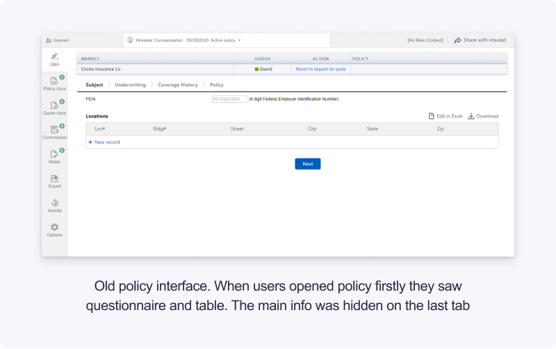After
Even when thinking about business performance, it is important to keep the user-centered approach in mind. Therefore, we studied the problems of users on this interface and updated it in accordance with users’ goals, paving the way for the further addition of features and the growth of business metrics.
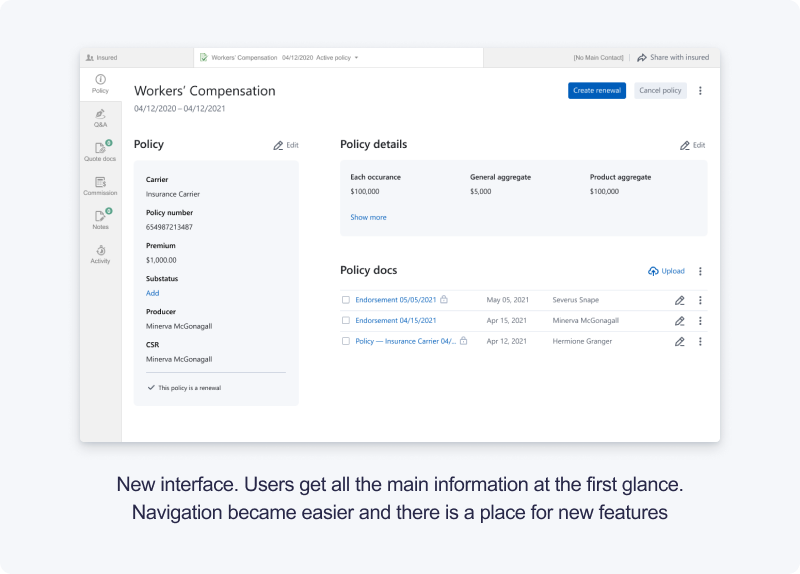➀ User research
We started by researching the data of the interface's usage. We checked the quantitative data to find out the attendance of the tabs and the popular actions on them. After that, we started collecting quality data:
- — interviewed stakeholders and sales team
- — conducted a competitive analysis
- — reviewed support tickets
Based on this data, we made an analog of CJM for features. It described what goals the users have and what information and actions are needed to achieve these goals.
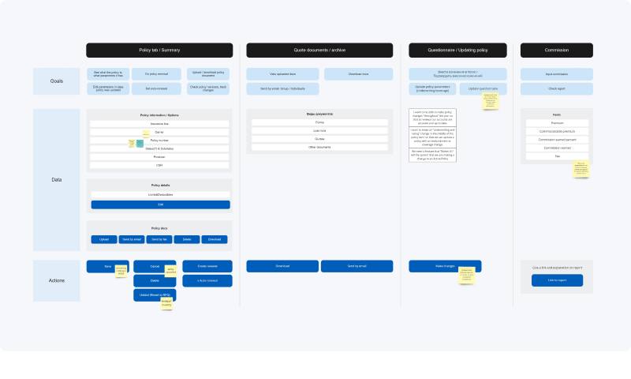As a result, we found out that the old interface had redundant navigation. The main info was placed on the different tabs. To put the info together user needs to move between tabs.
➁ Solution design
The main idea I followed was creating the main summary page for policy. Users can get back to the policy after several months after working on it to check the info or upload endorsements docs. All main info needed to be at a glance. Also, I needed to keep in mind that this page will be the starting point for adding new features.
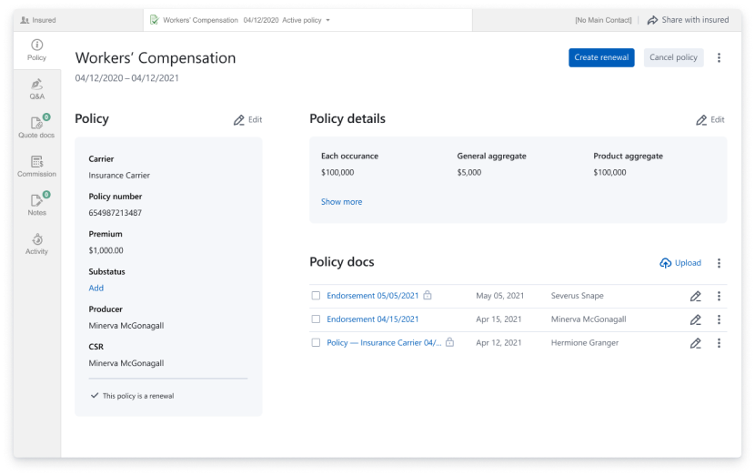➂ Prototype testing
I built a Figma prototype and with help from the sales team tested it with 5 users to validate the solution. We asked our users to complete 4 tasks and counted the number of completed tasks and time for each task.
As a result, we approved that one page with all main info helps users to easier find policy documents and main data. Also we received useful comments to update the prototype.
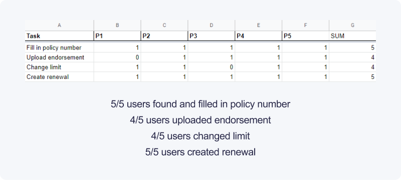 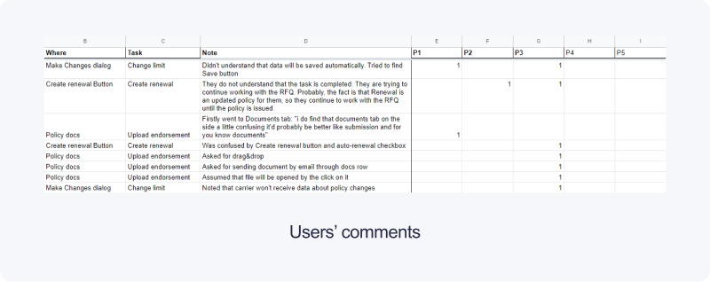➂ Iterative approach
We started to move iteratively by defining key metrics and checking them on each stage and making changes if needed.
Iteration – 1
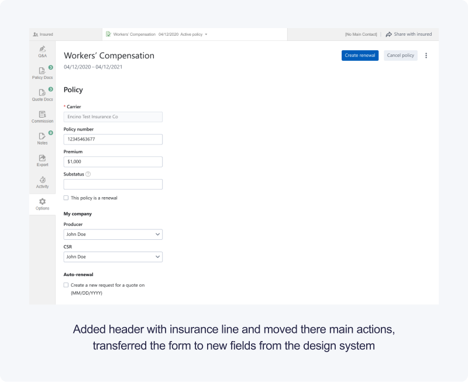Iteration – 2
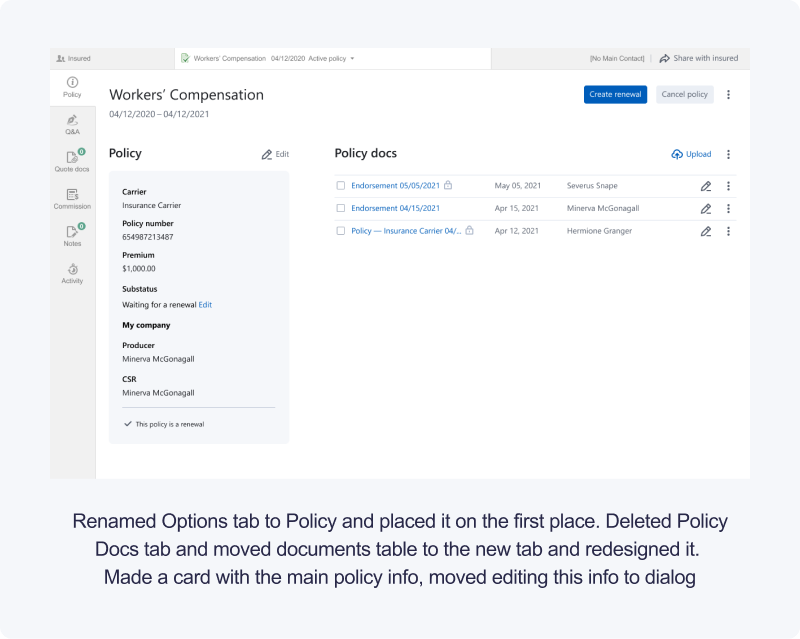 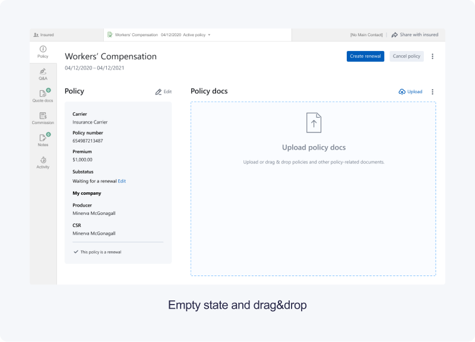 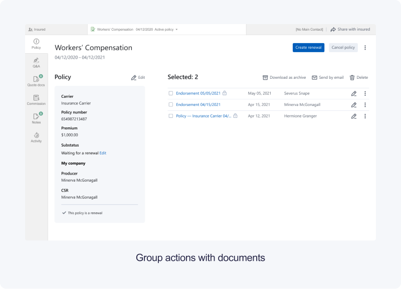 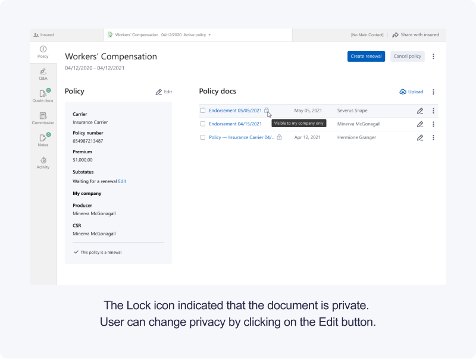 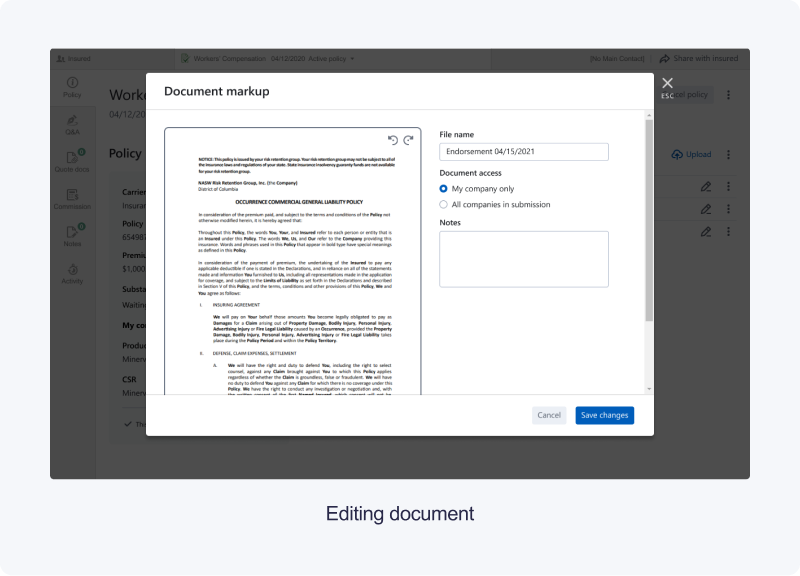Iteration – 3
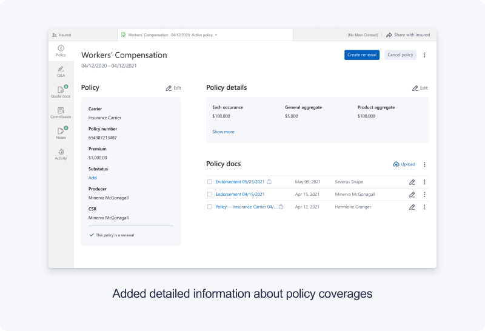 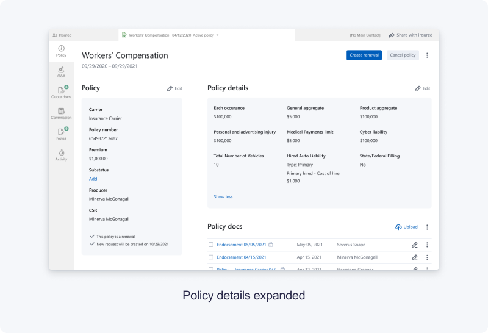➃ Outcomes
For each iteration, we specified metrics to track how changes impacted users’ behavior and to change the plan if something went unexpected. Except for the usual metrics such as bounce rate, time on page, we built a funnel to see how switching tabs had affected userflow. On the first two iterations, we didn’t observe negative effects.
The last iteration is still in development. At this stage, we’re going to conduct a qualitative survey to collect users’ feedback quickly.